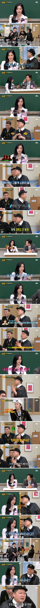
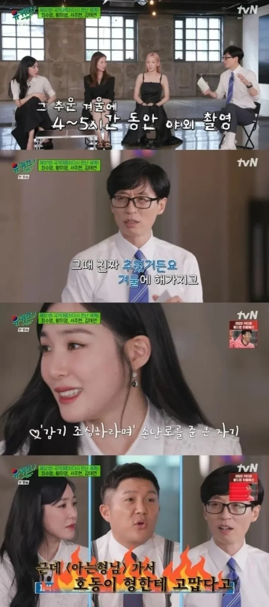
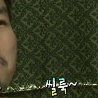

191 · 7 · 18 시간 전 · 원문

알고보니 유재석 미담

을 본 유재석
수집 당시 댓글 7개
↳ 답글 · 싱키 · 13 시간 전
딱지치기 무한딱밤 유효함?
무당 · 16 시간 전
헷갈릴만 해
↳ 답글 · 대변탕후루 · 14 시간 전
비슷하게 생기기까지 했으니까..
일진교육미이수자 · 15 시간 전
국민엠씨 듀오니까 그렇다치죠
XiJinPink · 11 시간 전

↳ 답글 · XiJinPink · 11 시간 전
홍철없는 홍철팀
↳ 답글 · 인간성기사뿌뿌뽕 · 7 시간 전
저거 방콕특집 때 무한도전 작가가 춤추는거 보고 웃참하는 중임
딱지치기 무한딱밤 유효함?